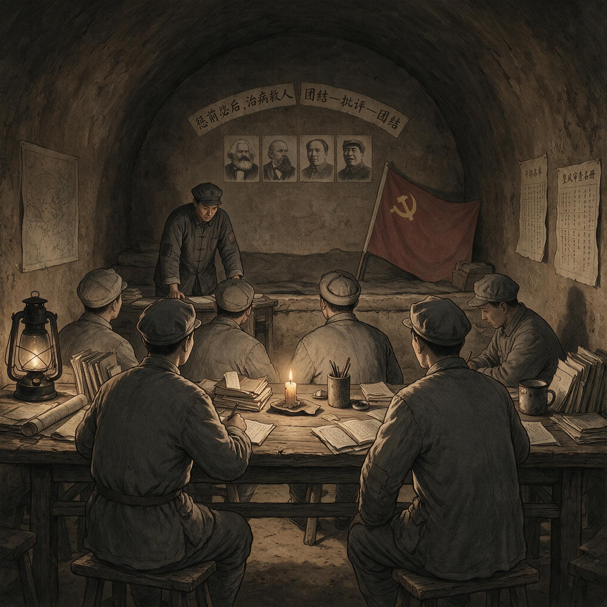

第 7 章
整风审查下的秘密干部
档案中那些问号和注脚，不会自行消失。它们被锁在铁皮柜里，等待另一种政治逻辑把它们翻检出来。

整风审查下的秘密干部：历史出版插图
AI 生成插图，非史实影像。
1942年春天，中共中央社会部收到一批从重庆转来的干部材料。材料用油布包裹，经交通线带回，其中有几份履历表，填表时间在1938年至1940年之间。一份表格的“社会关系”一栏写了三页纸：在国民政府军事委员会政治部第三厅任职期间认识的国民党官员，在文化界救亡协会活动中接触的记者和作家，在重庆商会筹款时打过交道的四川帮会人物。表格空白处有几处红笔批注，笔迹不同，显系多人所加。一处问：“此人为何与帮会分子往来频繁？”另一处写：“第三厅系郭沫若主持，郭沫若政治面目清楚，但该厅其他人员复杂，须查。”最晚近的一条批注日期是1942年3月，只有五个字：“待整风审查。”
这份表格之所以被保留，不是因为填表人后来成了大人物——事实上他在1939年的空袭中遇难，组织档案里只留下一个化名。它被保留，是因为社会部正在建立一套新的档案分类体系。这套体系不再按工作任务或组织归属分类，而是按干部的社会来源和历史关系分类。凡在白区工作过、在国统区公开机构中任过职、与国民党方面有过任何形式接触的党员，其档案都被单独抽出，归入一个标注为“待审查”的卷宗系列。这个系列在1942年初还只有薄薄几册，到1943年底已经塞满三个文件柜。
这就是整风运动对秘密工作系统产生的第一个、也是最具体的后果：审查不再针对某一项任务执行得好不好，而是针对一个人过去全部社会关系的总和。档案的分类方式本身就是一种权力表达，它决定了哪些信息会被并置，哪些关系会被放大，哪些历史会在未来被重新打开。
在此之前，地下干部的可信度维持机制相对简单。单线联系保证横向隔离，一个交通员只知道自己的上线和下线，即便被捕也无法供出整个组织网络。任务表现提供直接的能力证明——能在敌占区生存、能传递情报、能组织群众，就是可靠干部。个人忠诚则由入党介绍人、长期共事的同志和上级领导者的口碑来背书。隔离、绩效、口碑，这三重机制在1927年以后的白色恐怖时期被证明有效。它们不要求一个地下工作者在政治上是“纯洁”的，只要求他在行动上是可靠的。
这种机制之所以能够运转，是因为它匹配了当时秘密工作所处的阶段特征。在完全非法状态下，组织规模小、行动链条短、环境高度危险，任务失败往往直接意味着被捕或死亡。一个人能在这种条件下坚持工作，本身就构成对其可靠性的最有力证明。组织没有余力去追究每个成员的全部社会来源，也没有必要去追问那些为了生存而建立的灰色关系。秘密工作的职业能力，首先表现为在灰色地带中行动而不暴露的能力，而不是表现为政治履历的整洁。
抗战初期的统一战线改变了这一切。大量党员进入国民党军政机构、文化团体、工商企业，以公开职务为掩护从事秘密工作。他们必须与国民党官员称兄道弟，必须参加对方组织的社交活动，必须在公开场合表现出对国民政府的拥护。这些行为在当时是组织安排、甚至是组织要求的。周恩来在1938年给南方局干部的指示中，强调要善于交朋友、善于利用合法身份。但到了1942年，这些“朋友”和“合法身份”开始以另一种面貌出现在审查材料中。
统一战线带来的不只是组织规模的扩大，也是人际网络性质的改变。一个地下工作者不再只是秘密组织中的纵向节点，他还同时存在于公开社会的横向关系网中。这个横向关系网越真实、越厚密，其掩护就越有效，但它也在组织档案中留下越来越多的“他人”。这些“他人”不属于组织，不服从纪律，无法被单线联系的规则覆盖。当审查逻辑启动时，这些关系不会被视为工作成绩，而会被视为需要解释的疑点。
整风运动最初并不是针对秘密工作系统的。毛泽东1942年2月在中央党校开学典礼上宣布整风开始时，目标是清算以王明、博古为代表的共产国际路线，确立毛泽东在党内的思想权威。整风的核心文件讨论的是学风、党风、文风，是思想路线问题。但整风一旦从高级干部扩大到一般干部，从思想检查深入到组织审查，它的逻辑就不可避免地要触及秘密工作领域。原因很简单：白区工作和国统区工作的历史，与王明路线、与共产国际、与“二十八个半布尔什维克”的历史深度纠缠。
这里有一个制度上的必然性。秘密工作系统从来不是独立于政治路线之外的纯技术领域，相反，它长期是路线执行链条上最敏感的部分。谁在什么时候被派到哪里、用什么方式开展工作、与什么力量合作，这些都不是单纯的技术选择，而是政治路线在具体环境中的延伸。因此，当整风开始全面重估党史、清算路线错误时，秘密系统的工作者无法置身事外。他们过去的每一个行动，都可能被重新解释为路线错误的一部分，或者被重新怀疑为隐藏政治立场不纯的痕迹。
1931年以前，中央特科和各地地下组织由周恩来直接领导，但党的政治路线处于共产国际强影响之下。1931年至1935年，临时中央由博古负责，白区工作遭受毁灭性打击，中央机关被迫撤离上海。这段历史在整风中成为敏感地带：谁在上海时期犯了错误？谁应对白区组织的损失负责？
更关键的是，1937年王明从莫斯科回国后，担任中共中央长江局书记，直接领导国统区工作。他在武汉时期推行了一套被后来称为“一切经过统一战线”的方针，大量派遣干部进入国民政府机构，与国民党上层建立密切联系。1938年初，王明到枣园给敌区干部训练班作报告时，康生率领学员们振臂高呼“我们党的天才领袖王明同志万岁”。这个场面后来被反复提及，但提及的方式随着政治风向的变化而不断改变。
这个口号之所以重要，不是因为康生个人，而是因为它暴露了秘密战线内部长期存在的政治认同问题。在敌区干部训练班上，对领导人的公开尊崇并不是一件可有可无的事。它意味着在场的每一个人都处在同一条政治忠诚链条上。当这条链条后来被判定为错误路线时，曾经在场的人如果还留在秘密系统中，就必须证明自己当时并不是真心认同，或者证明自己在关键时刻已经转向。这种证明的难度，恰恰在于公开场合的欢呼往往没有留下可核验的内心证据。
1938年秋，王明在六届六中全会上受到批评，毛泽东的独立自主方针被确立为党的路线。但人事安排没有立即改变。1939年2月，康生出任新成立的中共中央社会部部长兼中央情报部部长，取代邓发领导情报保卫工作。社会部的成立本身就是整风的前奏之一。它把原来分散在各地、各系统的情报保卫力量集中到一个垂直领导的机构之下，而这个机构的首要任务，在康生看来，不是对外获取情报，而是对内清查奸细。
社会部的成立是一个关键的制度节点。它把情报保卫从单纯的业务工作提升为一个独立的权力系统。在这个系统中，判断忠诚的标准开始发生变化。过去的保卫工作更多是在事前防范外部渗透，而社会部则把事后追查、历史审查和组织鉴定放到了中心位置。一个干部即使从未出过事故，也可以因为过去的历史关系而被纳入审查视野。这使秘密系统内部出现了两个相互交叠的评价尺度：一个是任务尺度，一个是政治尺度。两者并不总是一致，而在社会部主导的体制下，后者逐渐压倒前者。
康生对社会部工作方针的阐释，在后来的各种回忆和批判材料中被反复概括为：保卫工作不能只看眼前行为，还要追查一个人过去与谁往来、为谁做过事；特务不会自报身份，而会伪装成积极分子。这套逻辑在当时的秘密工作语境中并非没有道理。国民党特务系统确实在向中共组织渗透，中统和军统在抗战期间都加强了对中共地下组织的侦查和策反。但康生把这种警惕性推向了一个特定方向：他不是要求用更严密的工作纪律和更精细的情报核实来防范渗透，而是要求用历史审查和政治鉴定来甄别每一个干部。
问题不在于是否应该防范渗透，而在于防范渗透的手段是否与秘密工作的实际逻辑相容。一个在敌区活动多年的地下工作者，其社会关系必然是异常复杂的。如果每一个过去的关系都需要解释，每一次必要的社会接触都可能成为疑点，那么审查就不仅仅是针对个别嫌疑分子，而是针对整个秘密工作群体的生存方式。这意味着，越是有经验、越是有能力的地下干部，往往越容易在审查中陷入被动，因为他们的工作恰恰建立在大量灰色关系之上。
1942年整风全面展开后，康生担任中共中央总学习委员会副主任（毛泽东任主任），成为整风运动的主要执行者。他把社会部的审查方法带进整风，又把整风的政治压力加载到社会部的审查对象身上。两条线索交汇：一条是思想整风，要求每个党员坦白自己的历史、批判自己的错误；一条是组织审查，要求每个干部交代自己的社会关系、证明自己的政治清白。对秘密工作干部来说，这两条线索的交汇意味着一个转变——他们在白区工作中建立的社会关系，不再被视为完成任务的手段，而被视为政治忠诚度的可疑痕迹。
这种汇流之所以危险，是因为思想坦白和组织审查在方法上很容易相互借用。思想整风要求每个人暴露灵魂深处的动摇和错误，组织审查要求每个人交出社会关系的全部细节。一旦两者叠加，审查者就会认为，一个人在思想上的任何模糊地带，都可能反映在其社会关系中的某个人身上；而一个人社会关系中的任何可疑对象，又反过来证明其思想上的不纯洁。政治错误、历史问题、社会关系，这三者被编织成一个互相印证的证据网络。要从这个网络中脱身，就不仅要说明自己做了什么，还要说明自己没有想过什么、没有和谁发生过什么。这在实践中几乎不可能完成。
审查的具体方式，可以从当时留下的若干文件中看出轮廓。1942年5月，中央社会部下发《关于审查白区工作干部的指示》。这份文件没有全文公开，但其要点在后来的党史著作中被多次引用。指示要求，所有在白区工作过的干部必须写出详细的自传，从童年到现在，逐年写出自己的历史、证明人何在、在何处做何事。自传中必须专门列出“社会关系”一节，包括亲戚、朋友、同学、同事、同乡中与国民党、三青团、特务机关、帮会、教会有关者。指示还特别强调，凡在国统区公开机关任职者，须将任职期间所接触之国民党人员逐一列出，注明姓名、职务、交往程度。
这份指示的设计者显然认为，只要把一个人的社会关系全部摊开，就能从中识别出隐藏的敌人。逻辑上，这个设想并不是毫无根据的。在静态的、信息完全的情况下，一个人的关系网络确实可以显示其政治倾向和行为模式。但秘密工作恰恰发生在信息不完全、环境极端动态的条件下。
一个地下工作者出于掩护需要而建立的关系，往往不是基于政治认同，而是基于职业必要性。如果把这些关系全部列出而不区分其性质，审查者看到的只会是一张高度复杂的网络，其中既有敌人、有中间派、也可能有潜在的合作者。要从中识别“奸细”，就需要一套明确的标准。但这份指示恰恰没有提供这样的标准。它只是要求列出，至于如何判断，则留给了审查者。
因此，真正的权力并不在“列出关系”的规定中，而在“判断关系”的自由裁量中。审查者可以认为某种关系属于正常的工作接触，也可以认为同一种关系属于值得追查的疑点。判断的标准往往不是事实本身，而是审查时的政治气候。当气候收紧时，任何关系都可以被解释为线索；当气候宽松时，同一关系又可以被解释为不可避免。秘密干部在审查中面对的最大困难，不是写出全部关系，而是无法预知自己的哪些关系会在什么时刻被赋予什么意义。
1942年秋天，整风进入高级干部整风阶段。毛泽东开始针对高级干部进行整风，重点检讨1928年以来的党史，尤其是与共产国际相关的人物和路线。1943年3月，中共中央政治局扩大会议重组权力核心，取消中共中央总书记设置，改为主席，由毛泽东担任。这一组织变动为整风的进一步扩大提供了政治前提：毛泽东的权威已经制度化，整风的打击面可以更广、力度可以更大。
高级干部整风与一般干部审查之间的差别，在一段时间里还保持着一道界线。高级干部的政治问题在路线会议上解决，其错误可以被定性、纠正，但仍然维持着基本的政治身份；一般干部和基层秘密工作者则被逐步归入组织审查的范畴，他们的“错误”不再通过路线讨论来处理，而通过个人历史交代来甄别。高级整风清理的是政治权力结构，一般审查清理的是组织肌体的边缘部分。秘密战线的基层干部大量属于后者，因此他们承受的冲击比高级干部更具体、更持久。
1943年4月，中共中央发布《关于继续开展整风运动的决定》，明确提出整风不仅是思想教育，而且是组织审查。这个决定把整风推向了一个新阶段，即抢救运动。抢救运动的全称是“抢救失足者运动”，其预设前提是：党内存在大量“失足者”，即被国民党特务拉拢、利用或安插的人员，整风的任务是把他们“抢救”出来。这个预设前提一旦成立，审查就不再是针对个别嫌疑分子，而是针对所有可能“失足”的人群。白区工作干部、国统区回来的党员、曾被国民党逮捕后又获释的同志，在抢救运动中首当其冲。
这里出现了评价标准的一次根本位移。在抢救运动的预设中，“失足者”并不是一个已经被证据证明的敌人，而是一个潜在的、尚未被发现的对象。因此，审查的任务不是证明某人有罪，而是要求每个人证明自己无罪。举证责任从审查者转移到被审查者，政治信任的默认值发生变化。一个地下工作者不再因为曾经完成任务而天然享有信任，相反，他必须通过坦白和交代来重新挣得某种被承认的资格。如果他没有办法证明自己与国民党方面的接触都是组织安排的、是清白的，那么这种接触本身就足以使他成为抢救对象。
1943年7月，康生在中央大礼堂作《抢救失足者》的报告，把抢救运动推向高潮。报告的具体内容没有全文公开，但据后来披露的材料，康生声称“特务就像蚂蚁一样，爬满了我们的机关”，号召一切失足者赶快坦白交代。报告之后，延安各机关、学校、部队全面展开坦白运动，召开抢救大会，要求每个人当众交代自己的历史问题和社会关系。拒绝交代或交代不彻底的，被隔离审查；交代出他人的，被要求继续深挖。
抢救大会之所以具有强大的动员能力，是因为它把政治压力集中在公开场合。一个人当众交代，既是在向组织报告，也是在向所有在场者展示自己的忠诚。在这种场合中，承认错误并不是最严重的后果，拒绝承认或者承认得不充分，才更危险。因为拒绝承认会被视为对抗组织，而承认不充分则会被视为仍然企图隐瞒。唯一安全的方式，似乎是不断加重自我否定，甚至供出一些组织希望听到的东西。这样，坦白就逐渐偏离了事实核查，而变成了一种政治仪式。仪式需要的不是准确，而是可见的悔过和持续的交代。
对秘密工作干部来说，坦白是一个几乎不可能完成的任务。一个地下工作者在敌区活动数年，接触过的人可能数以百计，其中必然包括国民党方面的人员。如果他如实交代这些关系，等于把自己的工作方式、掩护身份、情报来源全部暴露在审查者面前。而这些审查者中的许多人根本没有白区工作经验，无法理解地下工作的特殊逻辑。如果他选择隐瞒或简化某些关系，一旦被查出来，就成了“对党不老实”的铁证。更残酷的是，许多地下工作者在国统区时使用化名、伪造履历、编造假社会关系作为掩护。这些在当时是组织要求的专业技能，但在坦白运动中，任何“造假”行为都可能被解释为欺骗组织。
这里出现了一个结构性困境。秘密工作训练所要求的职业能力，恰恰包含了隐瞒、伪装、制造虚假社会关系等技能。这些技能在敌区是生存的前提，在组织内部却变成了不诚实的证据。一个干部如果承认自己曾经伪造过履历，就必须证明那是执行组织指示；但能够证明这一点的证明人，往往又由于单线联系而无法找到，或者碍于同案嫌疑而不能作证。即使找到了证明人，证明人本身的可靠性又可能受到怀疑。于是，越是有经验的地下工作者，越容易陷入无法自证清白的境地。这种困境不是个人运气问题，而是秘密工作逻辑与政治审查逻辑发生根本冲突的必然结果。
在抢救运动的高潮中，类似的坦白困境在后来披露的审查案例中反复出现。干部的交代材料里常有这样的结构：他们承认曾经加入过三青团、参加过某种公开活动、与某些国民党人员交往，但同时又声称这些行为系组织指示或掩护需要。审查者在材料上批注的常见结论是“无证明人”“暂存疑”。这类结论在当时意味着政治生命被冻结——不能担任重要工作，不能接触机密，随时可能被重新审查。一个干部可能在敌区坚持数年，完成多项任务，却因为在延安无法就某一段历史找到证明人而失去继续工作的资格。
审查的逻辑一旦启动，就会自我强化。一个干部被审查，他交代出的社会关系成为新的审查线索；这些线索指向更多人，更多人被审查，交代出更多关系。1943年下半年，延安的审查已经从个别谈话发展到大规模隔离，从机关学校蔓延到军队系统。被审查者集中在专门设立的训练班和学习班中，实际上处于软禁状态。他们被要求反复写自传、写交代材料，每一次都要比上一次更详细、更彻底。如果前后两次交代的内容有出入，哪怕只是日期记错、人名写误，就被认定为“企图隐瞒”。
这种反复交代的制度设计，表面上看是为了逼近真实，实际上却制造了一种特殊的行为激励。被审查者很快会意识到，无论自己写了什么，审查者总有可能要求更多、更细的内容。交代得越详细，越容易在某处出现前后不一致；而任何不一致都会被认定为有意隐瞒。于是，有些人开始根据审查者的暗示来调整自己的交代，猜测组织希望听到什么，而不是如实回忆发生过什么。逼供信的逻辑由此形成：先逼后供，有供即信，信了再逼。在这个循环中，材料的真实性反而成为次要问题，维持交代的连续性和组织所需要的情节才是更迫切的要求。
这种审查方式对秘密工作系统的冲击是结构性的。地下工作者的可靠性原本由任务成败来证明——你能在敌区活下来、能把情报传回来、能把组织维持住，你就是可靠的。但整风审查建立了一套新的评价标准：可靠性不再由你做了什么来证明，而由你“是谁”来决定。你的阶级出身、你的社会关系、你的历史履历、你在每一个关键节点的政治选择，构成了一张新的鉴定表。这套标准在理论上是自洽的：一个政治上纯洁的人，即便能力不足，也可以培养；一个政治上不可靠的人，即便能力再强，也可能成为隐患。
但问题在于，“政治上纯洁”的标准在秘密工作领域几乎是无法达到的。一个从未与国民党方面有过任何接触的人，不可能在国统区立足；一个从未说过一句违心话的人，不可能在敌方面前掩护身份。秘密工作的本质就是在灰色地带中行动，而整风审查恰恰要把灰色地带全部照亮。
把灰色地带照亮，这个比喻背后是一种政治哲学的转变。秘密工作传统把世界视为可以在不同层次上分别处理的领域：公开政治、半公开社会关系、秘密组织，各自有不同的规则。一个地下工作者可以在公开场合说一套、在半公开场合做一套、在秘密组织中坚持另一套，这种多重行为并不是人格分裂，而是职业分工。但整风审查的意识形态纯洁性要求，倾向于把所有这些层次压缩到同一个道德平面上来评判。一个人在任何场合所说、所做、所接触的人和事，都被看作其本质忠诚度的体现。多重身份不是职业能力，而变成人格可疑的征兆。
1943年9月，中共中央政治局会议决定检讨1928年以来的党史，特别针对共产国际派相关人物。这个决定把整风的政治维度进一步明确：审查不仅是防奸，而且是路线清算。白区工作干部中，许多人历史上与周恩来、刘少奇等领导的北方局和南方局有关，也有不少人曾在王明领导的长江局工作过。在路线清算的逻辑下，即便一个人没有“奸细”嫌疑，只要他曾在“错误路线”下工作，就必须检查自己的思想立场和政治表现。这使审查的范围进一步扩大：不仅是“坏人”要被揪出来，“好人”也要证明自己一贯正确。
这里触及了秘密战线一个长期被搁置的问题：组织纪律要求个人服从，但路线错误却往往由集体决定。一个地下工作者在1938年服从长江局的指示进入国民党机构，他的行动在当时是组织纪律的体现，在1939年之后却可能被重新解释为错误路线的结果。他本人并没有权力选择在哪条路线下工作，但他必须承担路线清算带来的后果。这说明，秘密系统中的个人责任和政治责任在制度上并没有被清楚区分。组织要求成员绝对服从，却又不为服从的后果提供免责。整风审查把这一点推向了极端：个人必须为自己的服从重新负责，而是否负责、如何负责，取决于后来的政治裁决。
到1944年初，抢救运动的扩大化已经引起严重反弹。大批干部被隔离审查，许多重要岗位出现空缺，情报工作受到影响。更重要的是，审查中采用“逼供信”手段造成的冤假错案开始暴露。一些被审查者在压力下交代出“特务关系”，但这些交代经不起核实；一些被供出的人经过调查发现根本没有问题。1944年春天，毛泽东开始纠正抢救运动的偏差，提出“一个不杀，大部不抓”的方针，要求对审查对象进行甄别平反。
这个纠偏是重要的，但它并没有回到原来的任务绩效标准，而是在政治纯洁性标准内部进行适当放宽。甄别的逻辑仍然是：搞清楚一个人的历史问题，确认其是否清白。审查制度本身没有被否定，被否定的只是审查中的某些过激方法。这意味着，秘密工作者的可靠性仍然要由历史履历和自我坦白来决定，而不是由他们在敌区的实际表现来决定。纠偏改变的只是审查的严厉程度，没有改变审查的评价基础。
甄别工作从1944年持续到1945年。社会部对抢救运动中形成的审查材料进行复核，一部分被审查者恢复了工作，但恢复往往是不完全的。他们被调离原来的关键岗位，安排到次要部门，或者留在延安参加学习而不再派往敌区。审查结论中常见的措辞是：“问题基本查清，但某些社会关系仍待进一步了解。”这种措辞意味着，即便甄别平反，干部的政治档案中仍然留下了疑点。这些疑点在平时不影响工作，但一旦政治运动再来，就会被重新翻出。
“问题基本查清”和“仍待进一步了解”这两个判断并置，形成了一个微妙的制度状态。它既允许干部恢复工作，又保留了对干部的持续审查权。它没有宣布一个人完全清白，只是宣布暂时不再追查。这样，疑点并没有被消除，而是被存档、被搁置。干部虽然在行政上恢复了使用，但在政治身份上始终带着一个未完全闭合的括号。这个括号在平时是隐形的，但它的存在使组织的信任结构发生了变化。信任不再是一次性授予的固定状态，而变成了可以随时收回、需要不断更新的暂时状态。秘密系统的内部关系因此变得更加谨慎，也更加猜忌。
更重要的是，整风审查为秘密系统留下了一套制度遗产。社会部在审查过程中建立起来的档案分类体系、干部审查程序、政治鉴定标准，在整风结束后并没有被废除，而是被保留和规范化。1945年中共七大后，中央社会部与情报部合并，但审查职能不但没有削弱，反而进一步制度化。此后，任何从事秘密工作的干部，在派出前必须经过政治审查，审查内容包括家庭出身、社会关系、历史表现；在完成任务后，还必须接受再次审查，以确认其在执行任务期间没有发生政治动摇。这套制度的逻辑出发点是防止渗透、保持纯洁，但它的实际效果是把秘密工作者的注意力从“如何完成任务”部分转移到“如何证明自己清白”上。
这是“暗线韧性”这个概念经历的一次重要变形。如果早期的地下组织依靠单线联系和绩效筛选，把个人忠诚转化为可替换的机构能力，那么整风审查则在机构内部叠加了一层意识形态过滤机制。这层机制在短期内确实清洗了一批被认为不可靠的分子，加强了组织在政治上的同质性，从这个意义上说，它也是一种组织韧性的重建。
但长期看，它使评价秘密干部的标准从任务绩效转向政治鉴定，机构能力的可替换性不再由专业技术水平来保障，而由不断进行的政治审查来维持。暗线韧性因此不再只是对外的适应能力，也变成对内不断收紧的控制能力。这两者之间的张力，从1944年开始成为秘密系统内部结构性矛盾的一部分。
一个具体后果是，地下工作者在执行任务时，开始有意识地规避那些可能引起审查怀疑的行为。与国民党方面接触时，尽量不留下文字记录；发展社会关系时，优先选择政治上“干净”的对象；甚至在情报获取上，宁可错过一些机会，也不愿冒险进入灰色地带。这种行为调整是理性的——在审查制度下，一次成功的情报获取不会给个人带来多少加分，但一个解释不清的社会关系足以毁掉政治前途。但这种理性调整对秘密工作的整体效能是有损害的：它降低了组织对复杂环境的适应能力，缩小了情报来源的覆盖范围，使干部在敌区的行动变得更加保守、更加程式化。
这里可以清楚地看到，审查制度不只是事后追责，它还对事前行为产生反向塑造。干部在派出之前就预见到未来的审查，于是把安全重心从任务成功转向自我保护。
自我保护策略之一，就是尽量减少可能被未来审查者视为疑点的行为。这在一定程度上有助于纪律的严格，但也造成了行动效能的损失。秘密工作本来就需要灵活应变、需要根据环境随时调整手段，而审查制度却给这种灵活性加上了沉重的政治代价预期。组织得到的是一批在政治鉴定上更“干净”的干部，但可能也同时失去了一些敢于深入险地、敢于运用复杂社会关系获取关键情报的人。这个代价在当时并不显眼，因为在抗战后期和内战初期，根据地和军队系统仍能提供足够的情报支撑，但它埋下了秘密系统专业能力相对弱化的种子。
1944年秋天，那些从敌区陆续撤回延安的情报干部中，许多人被要求写出自我总结。这些总结材料一般都包含两部分：一部分写工作任务和成效，另一部分写思想检查和历史交代。前一部分往往简短，后一部分往往冗长。干部们清楚，决定自己能否继续工作的，主要不是前者，而是后者。材料中频繁出现这样的表述：在敌区最担心的不是被敌人发现，而是回来后说不清楚。审查者则常常在这种表述旁批注意见，认为这是“立场问题”。这些材料后来被归入整风审查案例卷宗，和其他数千份材料一起，锁进了社会部的铁皮柜。
那些铁皮柜里锁着的，不只是个人的命运。那里锁着一种逻辑转换的完整记录。一个为应对外部敌人而建立起来的秘密系统，如何逐渐把审视的目光转向内部；一套原本用来评估任务绩效的标准，如何被一套评估政治纯洁性的标准所取代；一群在最危险的环境中为组织工作的人，如何被要求用坦白和交代来重新证明自己的忠诚。这种转换不是某个人决定的，也不是某一天发生的。它是在整风运动的逻辑展开中、在审查制度的逐步建立中、在成千上万份自传材料和审查结论的累积中，悄然完成的。
到1944年底，抢救运动的高潮已经过去，甄别平反正在进行，但审查制度已经牢牢嵌入了秘密系统的肌体。从这时起，一个地下工作者要获得组织的信任，不仅需要完成任务，还需要一个“干净”的历史；不仅要证明自己的能力，还要证明自己的纯洁。任务和能力是可以衡量的，历史和纯洁却永远可以重新审视。这意味着，信任从此不再是确定的，而是暂时的、可撤销的。任何一个过去的细节、任何一段旧的社会关系，都可能在未来的某一天被重新翻检出来，成为新的审查起点。
这种不确定性，构成了秘密系统内部一种持续的低度紧张。它不会爆发为公开冲突——审查制度的权威已经确立，没有人会公开质疑它。但它会在组织的毛细血管中缓慢流动，影响每一个身处其中的人的选择和行为。它让谨慎变成多疑，让隐蔽变成自我封闭，让对外部敌人的警惕转向对内部同志的审视。一个为解决问题而建立的系统，正在产生出新的问题。
这种内部审视一旦定型，秘密系统的功能就不再只是获取情报、保卫组织，它还开始承担一种不断鉴别、不断清洗自我队伍的任务。这个任务在抗战后期只是初露端倪，但其制度逻辑已经预示了秘密系统未来更大幅度的转向。
1945年初，中央社会部编制了一份《审查工作总结报告》，列举了抢救运动期间审查的白区工作干部人数、甄别平反的比例、尚未结案的案例数量。这份报告没有全文公开，但据后来引述的片段，报告承认“审查面过宽”、“方法简单化”、“造成一些冤假错案”，同时强调“审查制度本身是必要的，今后应更加规范地进行”。这个结论意味着，审查不会被废除，只会被“规范”。而“规范”的具体含义，将在战后的岁月里逐渐显现出来。
这个“规范”的落点，正是后来安全机关内控手段的起点。审查制度一旦被视为必要，其重点就不再是是否要审查，而是如何审查、由谁审查、审查的标准如何统一。这带来的是组织职能的进一步分化：有些人负责情报获取，有些人负责内部甄别，有些人负责档案管理。
秘密系统内部开始形成外勤和内控两套不同的逻辑。外勤要求灵活、隐蔽、敢于接触灰色地带；内控要求严格、透明、把所有关系都纳入可核查的档案。两者在组织上可以被分离，但在同一个系统中长期共存，必然造成摩擦。这种摩擦在抗战胜利后将继续发酵，因为大量从敌区回来的干部还需要重新分配岗位，而每一个岗位的分配都已经离不开审查档案的标注。
那些在整风中被审查、被调离、被留下疑点的干部，他们的命运还没有最终落定。他们的档案仍然留在“待审查”的卷宗里，等待下一次政治运动把它们重新打开。